每年美国国庆前后都是枪击案高发期。
今年7月13日，美国前总统特朗普参加竞选集会时遭遇枪击，枪手使用的是AR-15半自动突击步枪，这款步枪长久以来广受美国拥枪人士欢迎，但也早就恶名昭彰，因其近年涉及多宗严重枪击惨剧，包括美国历来死伤最严重的枪击案。
2017年十月在拉斯维加斯造成60人死亡、数百人受伤的枪击惨剧，枪手就是使用AR-15从酒店房间向在酒店外一个广场参加演唱会的人群开枪；2023年十月，缅因州刘易斯顿市保龄球场和餐厅等多处地方22人死亡的枪击案；2022年五月，得州一所小学发生19名学生和两名老师死亡的枪击案等多宗枪击惨剧，枪手都是使用AR-15。这款“美国步枪”已经成为美国枪械管制争论的主角。
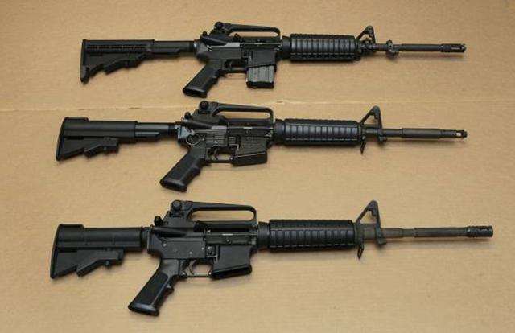
美国宪法第二修正案规定了个人持枪权，但枪支管制的相关政策一直是美国政治中的争议话题。据统计，2024年上半年，美国大规模枪击案已达到300起、因枪支暴力死亡人数达9292人、受伤人数近1.8万人。美国枪支泛滥引发的恶性暴力问题由来已久，随着社会进一步撕裂，这个“枪之国”将何去何从？
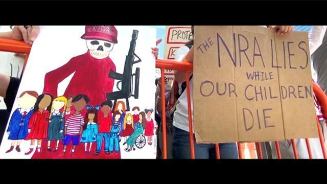
天赋人权持枪自卫，射击学校广受欢迎
亚利桑那州是美国枪支管控最宽松的州之一。广袤的西部环境是天然的枪击训练场。杰夫·库珀上校于1976年在这里创建了“枪域”射击学校。他是前海军陆战队队员，二战和朝鲜战争的老兵，又成为战略情报局、后来的中央情报局的特工。他希望使美国国民人人训练有素，能抵御任何侵略者。
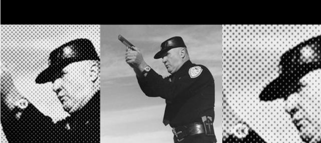
这些新学员将参加一套为期5天的强化课程，费用为2000美元。在射击教练中，有曾在伊拉克或阿富汗服役的前海军陆战队队员、狙击手和步兵指挥官，也有警队神枪手。
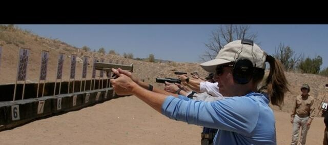
美国宪法第二修正案规定，美国人有权携带武器自卫。在大多数州他们可以在一天内购买任意数量的武器而没有限制。更令人惊讶的是，他们不需要知道如何使用这些武器，不需要强制上射击课。如果武器是藏起来的就需要持有许可证，但如果把枪别在腰间反而不需要许可证。
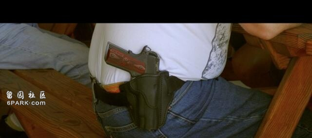
使用自己的防御手段、不依赖他人，是美国建国神话的重要组成。白人孤胆英雄的典型形象是：在充满敌意的土地上谋求生存，时常遭受野蛮人的袭击。
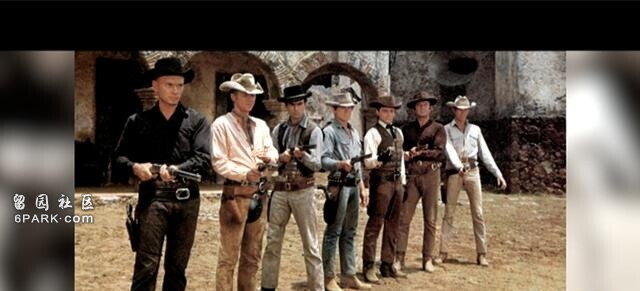
亚利桑那州图森大学社会学家和历史学家 詹妮弗·卡尔森：
“从一开始，枪就是美国的国家和社会形成的核心工具。从早期的美利坚共和国、独立战争，以及摆脱英国殖民统治的过程中都可以看到这点。在向西部拓展以及对土著人的种族灭绝中，我们也可以看到枪支。”
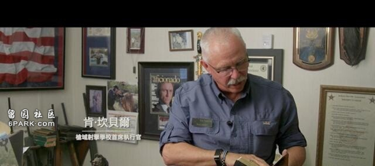
“枪域”射击学校首席执行官 肯·坎贝尔：
“我拥有枪支的权利不是政府授予的，而是上帝授予的。”
获取武器轻而易举，暴力犯罪一念之间
联邦调查局的报告显示，美国的枪支犯罪比墨西哥多33%。事实上，在边境的另一边几乎不可能合法获得枪支。墨西哥的大多数谋杀案使用的枪支是从美国进口的。
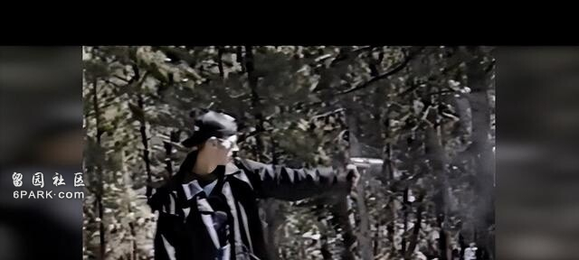
获取武器轻而易举。每当发生大规模枪击事件时，民众都会惊讶行凶者获取武器如此简单，有时甚至轻松买下整座军火库，科伦拜恩大屠杀就是一个例子。
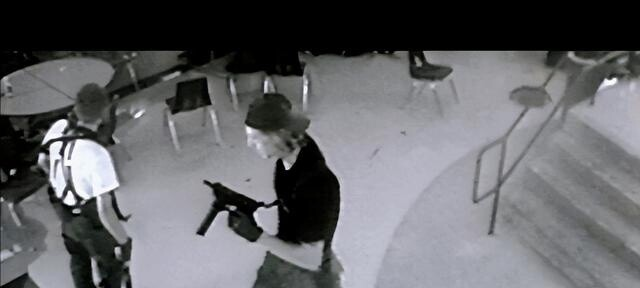
两名青少年在一所高中横冲直撞，他们携带卡宾枪、9毫米口径猎枪和另外几支手枪，造成15人死亡，24人受伤。
接着，弗吉尼亚理工学院发生枪击事件，一名23岁的男子手持两把半自动手枪开火，造成32人死亡，23人受伤。
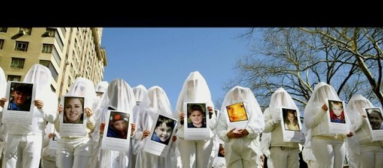
在桑迪胡克小学，20名儿童和6名教师遇难。在帕克兰，17名学生死亡……触目惊心的统计数字和无法衡量的痛苦，震动了整个美国。
武装民兵源自奴隶巡逻队，
黑人拿起枪捍卫生存权
距离美墨边境几公里的阿里瓦卡，在前总统特朗普修建的边境墙沿线。武装民兵、移民和犯罪集团时常在这里爆发冲突。蒂姆·弗利及其团队每年都要练习几次追击，为了抓住试图穿越边境避难的人。
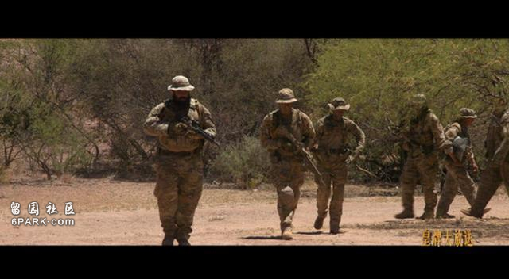
这些民兵的目的是保护国家安全、支持边境警察的工作，一些人认为边境警察的工作不给力。法律上没有禁止民兵使用武力，只要他们迅速把抓获的人交给警察。民兵多半是退伍军人，对使用武器非常在行。一些从伊拉克或阿富汗战场回来的退伍军人梦想破灭，饱受创伤后应激障碍的困扰，通过追随蒂姆·弗利，这些人找到了生活的目标。蒂姆·弗利曾是建筑行业的生产经理，在2008年的次贷危机中失去了一切。他是特朗普的狂热粉丝，也是2021年1月袭击国会大厦的极端分子的一员。
武装民兵团体负责人 蒂姆·弗利：
“在拜登当选的第一个月，仅在那一个月就售出了500万支枪。在美国，公民手中的武器比全球26个最大的常备军拥有的武器总和还多。”
管理有序的民兵队伍对于一个自由州的安全是必需的，这是美国宪法第二修正案的核心。但是对许多人来说，宪法里的这些语句背后讲述的是美国种族主义历史。历史学家詹妮弗·卡尔森认为，第二修正案中提到的民兵，指的是当年的奴隶巡逻队。
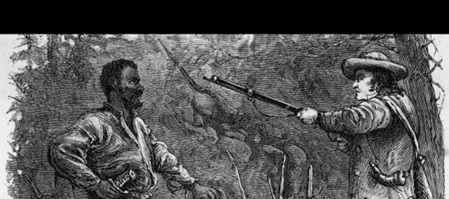
没有武装民兵，如何对美利坚土地上100多万的奴隶进行监控？历史上的特纳起义引起了白人的恐惧。1831年，黑人奴隶纳特·特纳在弗吉尼亚领导了一场反对白人奴隶主的血腥暴动。随后，民兵进行了可怕的报复。特纳被绞死后，他的尸体被肢解和斩首，数百名奴隶被屠杀，以示威慑。
过去两年，针对美国黑人群体的严重暴力事件时有发生。白人警察对黑人滥用逮捕权。
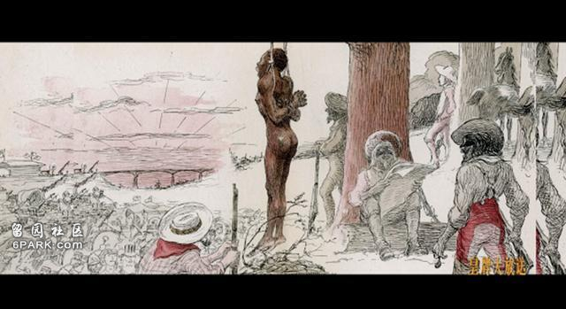
菲兰多·卡斯蒂利亚在他的车里被杀，布里翁娜·泰勒在睡觉时被警察所杀，艾哈迈德·阿贝里在外出慢跑时被3个白人误认为小偷，之后被杀死。一系列事件给黑人群体造成了创伤。很快，他们把自己武装起来，进行报复。
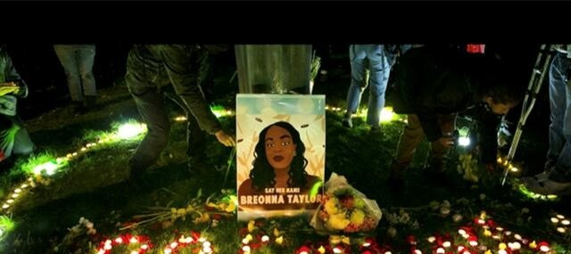
全美非裔美国人枪支协会在美国拥有4万名成员，是美国最大的黑人枪支组织。据统计，美国黑人被枪击的可能性是白人的18倍，被枪杀死的可能性是白人的10倍。新泽西州纽瓦克与繁华的纽约曼哈顿富人区隔河相望，这里黑人占绝大多数，帮派林立，贫困和暴力充斥整个小区，这里是新泽西的缩影。尽管新泽西控枪法律严厉程度全美排名第二。但是在2019年，全州平均每天都有一人死于枪击。
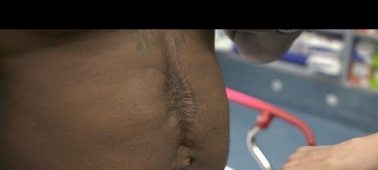
2024年7月4日，就在美国国庆节这天，全美各地枪击案频传，造成至少33人死亡。武器到底是维护秩序和正义的工具？还是种下仇恨、推动报复的帮凶？“枪之国”的未来将走向何方？
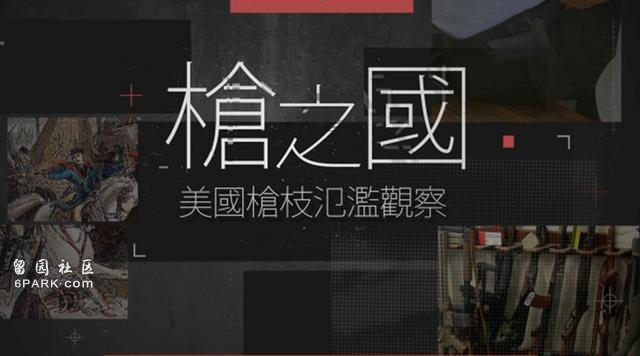